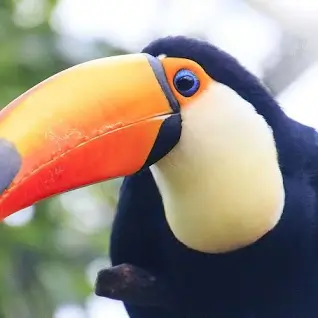

Birds
There are many birds in the world but only some can be seen in a zoo.
Parrots
Parrots Can Live Over 100 Years
Parrots Are The Only Animal In The World Capable of Mimicking Human Speech
The World's Smallest Parrot Is Only 3 Inches Long
Owls
Owls' Eyes Are Actually Tubes.
They Are Made to Have Flexible Necks.
Their Ears Are Wonky but Effective.
Toucans

Toucans are best known for their large, colorful bills, which can be four times the size of their head
Finding and catching food is aided by a toucan's long tongue, which can measure up to 5.9 inches
A toucan can live for up to 20 years